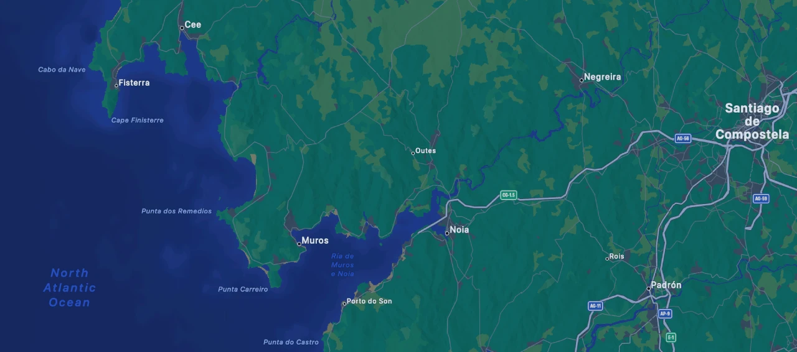

Vrienden, familie, buren, klasgenoten die leuke dingen samen doen of elkaar soms een beetje helpen. Helemaal top. Superbelangrijk: mensen zijn sociale dieren.
Finisterre (finis: klaar/einde) Terre, net als (Terra = aarde/wereld): Wanneer je op de kaart van Spanje kijkt en je zoekt Santiago de Compostella in het noordwesten, en gaat dan nog verder naar het westen, dan kom je bij Finisterra aan de Atlantische oceaan. En vroeger, toen men dacht dat de aarde plat was, hield de wereld hier dus echt op. Wanneer je hier naar het westen zou zeilen, kon je zomaar van de aarde aftuimelen en in de hel/onderwereld terechtkomen! Spannend plekje, niet? Overigens heet ook het meest westelijke departement van Frankrijk: ‘Finistère’…